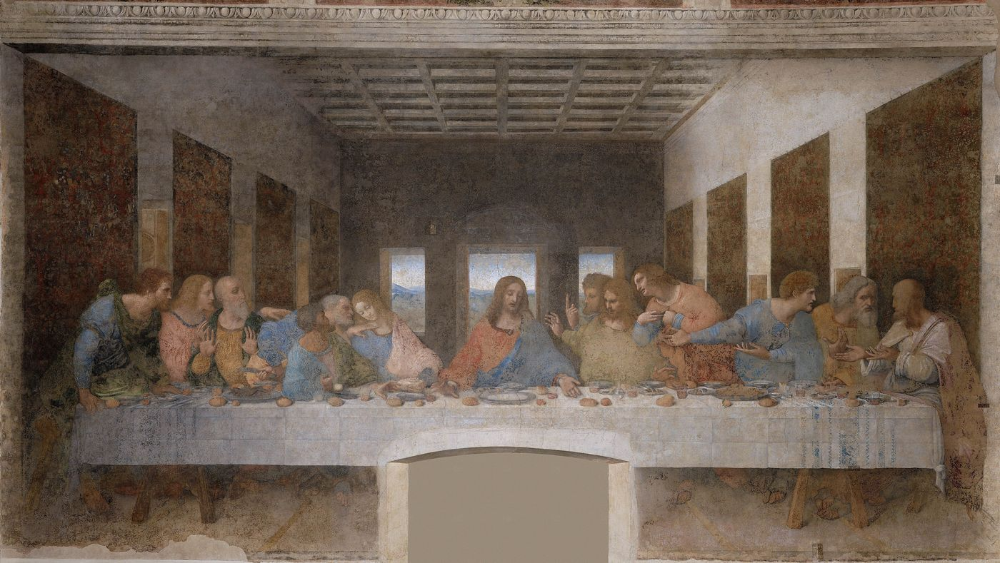

Mayurdeep Pathak
Indian Institute of Science, Bangalore

I am a graduate student in the Visual Information Processing Lab at the Indian Institute of Science, working with Prof. Rajiv Soundararajan.
I study how to reconstruct scenes that move. Given a few synchronized videos of an event, the aim is a three-dimensional record of it that can be seen from any viewpoint, at any moment. The still parts of a scene have become easy; the people in it have not. Hands, faces and the folds of a sleeve are where reconstructions soften, and that is where I spend most of my time: first making them sharp, then keeping them sharp as a recording runs from seconds into minutes.
More broadly: 3D vision, dynamic scene reconstruction, novel view synthesis, and image and video processing.
Publications
- Sustaining Reconstruction Quality in Long-Duration Dynamic 3D Gaussian Splatting Mayurdeep Pathak, Vikram Sandu, Rajiv Soundararajan Project page
- Temporally Aware Densification for Dynamic 3D Gaussian Splatting Vikram Sandu, Mayurdeep Pathak, Rajiv Soundararajan ECCV 2026 · Project page · arXiv
- GlobeMetrics: A Healthcare Framework for Video Based Saccade Characterization Debanga Raj Neog, Pharvesh Salman Choudhary, Mayurdeep Pathak IEEE CAI 2024